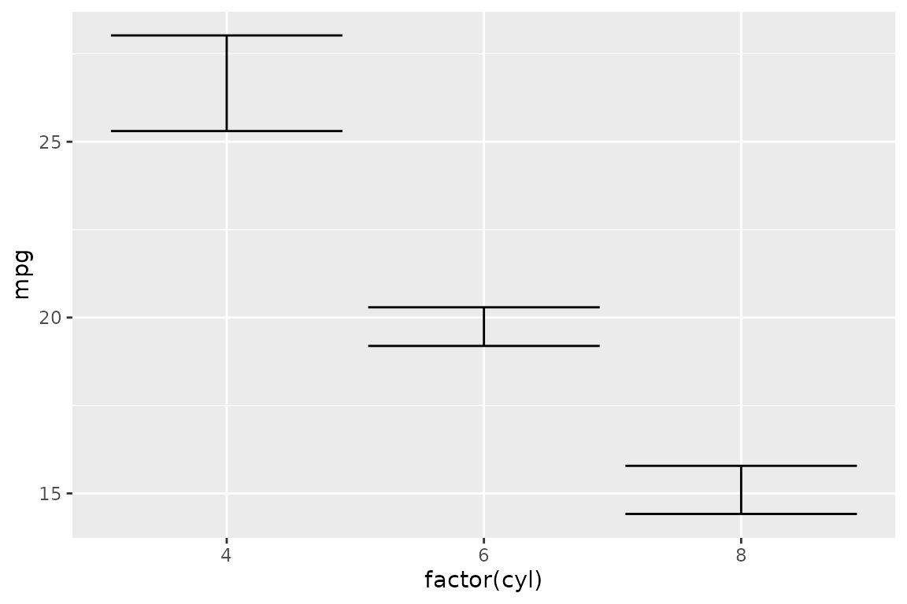
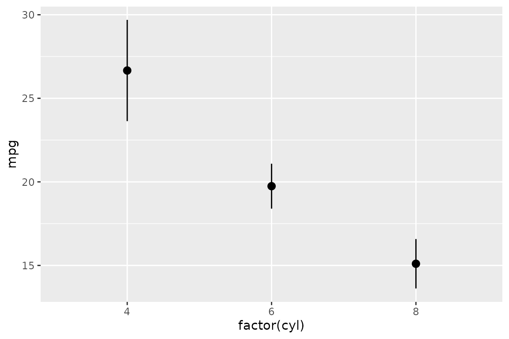
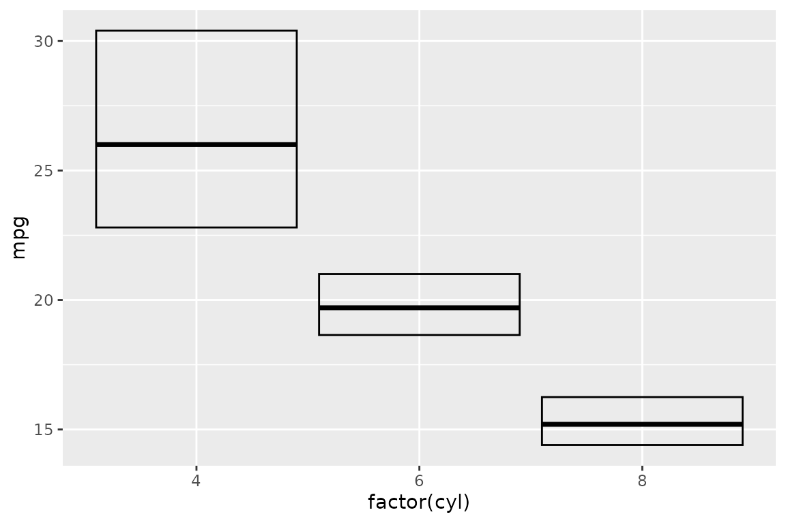
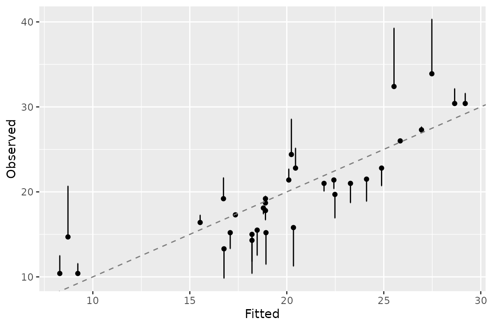
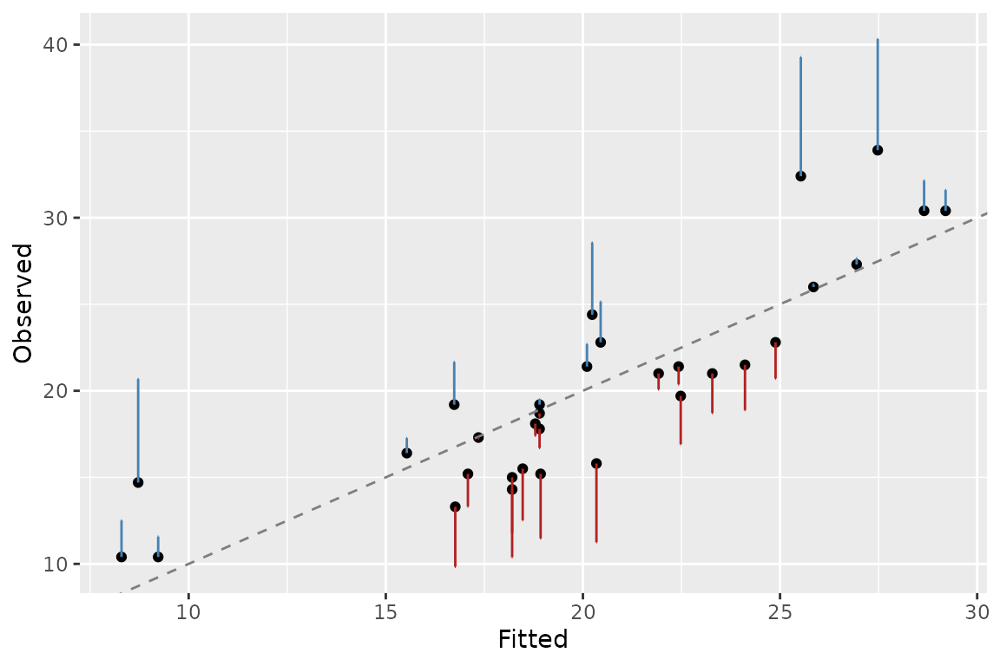

Two v1.0.0 features turn ggerror from “an error-bar
ergonomics wrapper” into a genuine statistical layer:
-
stat_error()summarises raw observation-level data into error bounds per group, following ggplot2’sfun.datacontract. -
sign_aware = TRUEroutes signed values (typically residuals) into one-sided bars whose direction encodes the sign.
stat_error(): summarise on the fly
Pass raw observations and let the stat compute the error. The default
is mean_se — mean with one standard error:
ggplot(mtcars, aes(factor(cyl), mpg)) +
stat_error()
Swap in mean_ci for a 95% normal-theory confidence
interval (no Hmisc dependency):
ggplot(mtcars, aes(factor(cyl), mpg)) +
stat_error(fun = "mean_ci", error_geom = "pointrange")
You can also pass a custom function following ggplot2’s
fun.data contract — it takes a numeric vector and returns a
single-row data frame with columns y, ymin,
ymax:
iqr <- function(y) {
data.frame(
y = median(y),
ymin = stats::quantile(y, 0.25, names = FALSE),
ymax = stats::quantile(y, 0.75, names = FALSE)
)
}
ggplot(mtcars, aes(factor(cyl), mpg)) +
stat_error(fun = iqr, error_geom = "crossbar")
stat_error() and geom_error(stat = "error")
are equivalent — use whichever reads better in context.
sign_aware: residuals as one-sided bars
For a residual plot, center x/y on the
fitted value and let the bar extend toward the observed value. Positive
residuals route to error_pos, negative to
error_neg, and the opposite side is auto-suppressed:
model <- lm(mpg ~ wt, data = mtcars)
ggplot(mtcars, aes(fitted(model), mpg)) +
geom_point() +
geom_abline(slope = 1, intercept = 0, linetype = 2, colour = "grey50") +
geom_error(aes(error = resid(model)),
sign_aware = TRUE, orientation = "x") +
labs(x = "Fitted", y = "Observed")
The bar points from fitted to observed: sign
encodes direction, length encodes magnitude. Both axes are numeric, so
pass orientation = "x" to get vertical bars (the error
extends along y, the observed axis).
Colour the halves separately to make the direction even more obvious:
ggplot(mtcars, aes(fitted(model), mpg)) +
geom_point() +
geom_abline(slope = 1, intercept = 0, linetype = 2, colour = "grey50") +
geom_error(
aes(error = resid(model)),
sign_aware = TRUE,
orientation = "x",
colour_neg = "firebrick",
colour_pos = "steelblue"
) +
labs(x = "Fitted", y = "Observed")
A note on incompatibility
sign_aware routes signed per-row values, while
stat_error() summarises raw observations into bounds —
there is no sign to route. Combining them raises a classed error
(ggerror_error_sign_aware_with_stat).